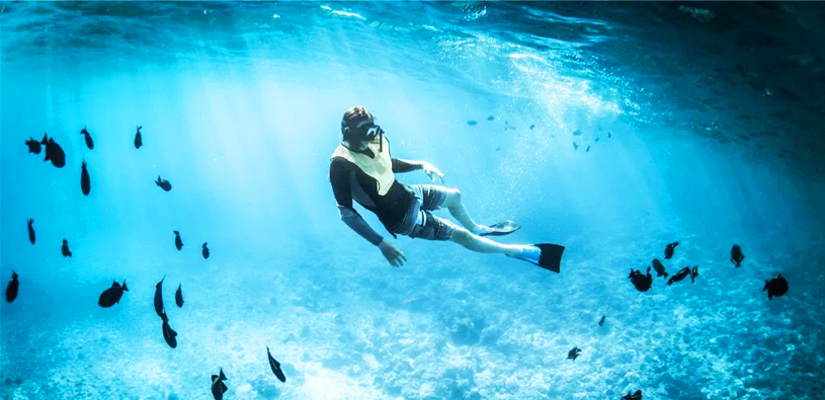

First Time Divers? Santorini is Your Place!
Diving is an exhilarating experience and is rightly reserved for only a few of the privileged lot. You need to be a swimmer, a brave heart at that. To dive, you need to venture into the deep sea, challenge the fear of the unknown and plunge into the mysterious world of azure blue ocean. To dive, you need to travel far and wide. Truly an exotic experience, diving is one of the few pristine travel experiences still thriving in this world, yet to be masqueraded by the surge of over tourism.
Think diving, think of Mediterranean Sea. The dome shaped ivory houses of Santorini in Greece bids adieu to marvelous sunset everyday. We already know that from countless Instagram posts.
But who would have thought, Santorini also houses some of the most beautiful diving spots in the world? Diving in Santorini is a calming experience, especially for the first time divers. The sea is not turbulent. Not many violent sea animals lurk behind those emerald green water-body either.
What’s so special about Diving in Santorini?
Believe this or not, waters at Santorini’s most acclaimed diving spots are pretty “instagrammable”, meaning they are good spots for pictures with good lighting sources. The current is mild too.
Santorini is one of the few spots in the world with diving spots dotted with volcanic craters.
Needless to say,topography is pretty distinct in appearance.
From earth forms to exotic marine lives to remains of shipwrecks and possibility to unearth lost human civilizations, Santorini has a world underneath its water, waiting to be discovered by those who dare. Yes, I am talking about the historical city of Atlantis, a part of various folklore and myths!Needless to say, diving in Santorini is an enjoyable affair and brings back experts from distant corners of the world, repeatedly.
What is it like to dive in Santorini
Divers at Santorini narrates the experience as a slow swimming process around many craters. The topography is unique as active volcano is located nearby. Nudibranchs, clams, corals greet on the way. You may encounter sparse sea life while diving at Santorini, however many a shipwreck evoke melancholy under the water.
Santorini underwater level let’s amateurs take a plunge at ease. The sea is only 13 Meters deep at certain places. Those who are not comfortable with diving can try snorkeling with a life jacket on!
Best places to go diving in Santorini
Nea Kameni is the crater around which Santorini was formed. It is a beautiful place to observe quirky topography.
Adiavatous Reef is located inside the Caldera Rim and is a scenic spot as well.
Plenty of marine life including Sea fish (like barracuda, groupers, wrasse, etc) as well as a number of invertebrates and crustaceans can be seen here!
On the west of Caldera lies, White island. Sponges of myriad colors and shapes are located in the region. Even though an active volcano is looming large behind, the small holiday island in Greece, it is studded with beautiful coral walls and make up for one of the finest diving spots in Santorini.
House Reef is home to elusive hermit crabs and many other marine lives. Locals call it the crowdiest place in Santorini to swim. Fishermen refrain from venturing into these waters.
Take up a scuba diving class when in Santorini
With plenty of options and spots to dive in, Santorini has long withstood the pressure of diving at various spots. Experts from various parts of the world has joined hands to train learners the tricks of the art.
Diving is a joyful experience which lets a man explore the untouched parts of the world, without creating havoc or creating turbulence in the ecological balance. To learn diving, one has to start with knowing the responsibilities and basics of nature lying under the world. It is a different world out there. A world, which thrives on its own order and rules.
It is also important to understand the nature of the water and favorable times to dive to secure one’s self and other divers in the group. Plenty of scuba diving classes can be availed at Santorini for the first timers. Diving teachers are Padi certified and generally have a plethora of experience to conduct the event.
Water sports and related activities in Santorini are not only restricted to diving. You can club it with deep sea diving, kayaking and sailing, especially during sunset! The list and scope is endless really. Clear azure waters and beautiful sky in the warmth of summer is the peak choice to visit Santorini for the divers.